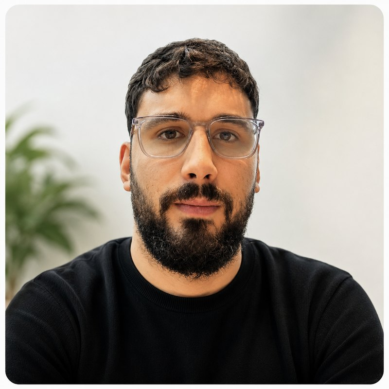

Directeur D&I & Community
Selim Ardağ
Passionné par l'éducation inclusive, Selim coordonne des programmes de diversité et d'inclusion à Bruxelles, en travaillant avec des communautés sous-représentées, notamment les jeunes issus de l'immigration, les étudiants de première génération et les apprenants multilingues. Son approche bienveillante et son expérience terrain font de lui un pilier de l'accompagnement éducatif au sein de BRED.
Écrire à Selim Ardağ